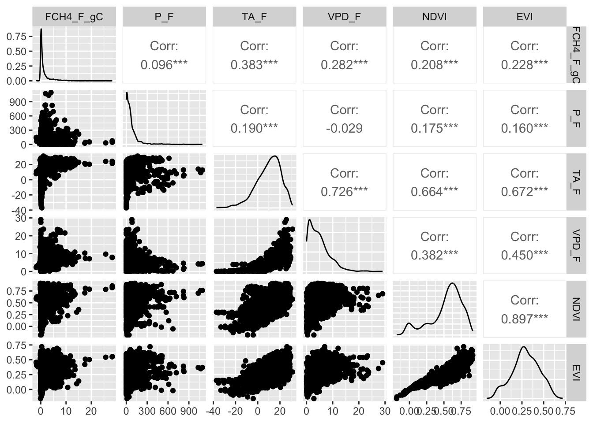
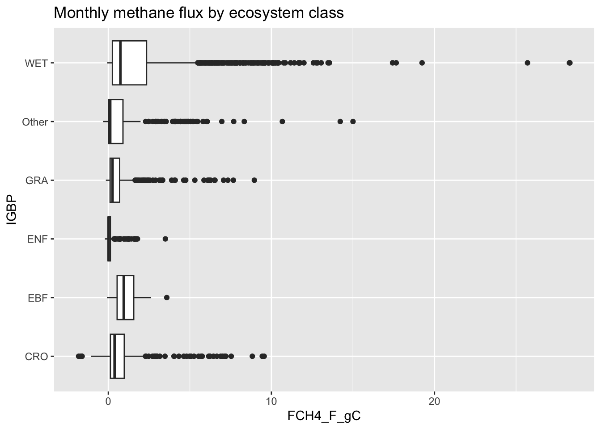
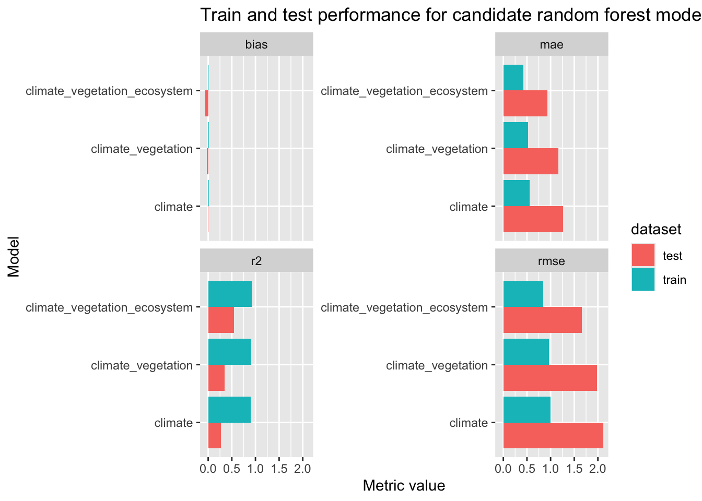
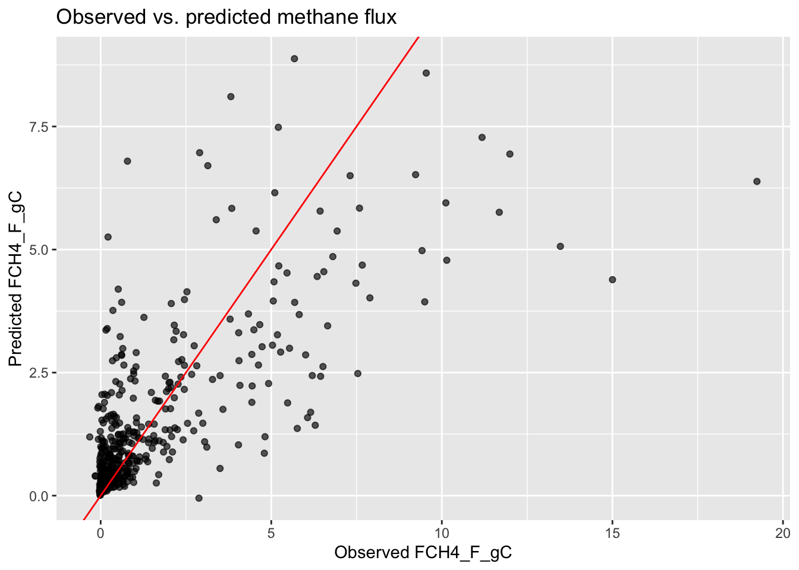
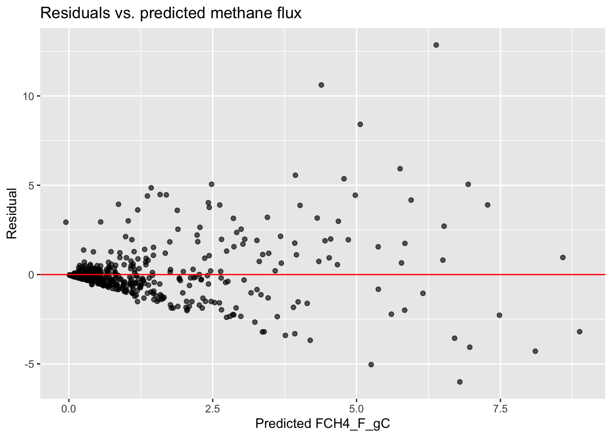
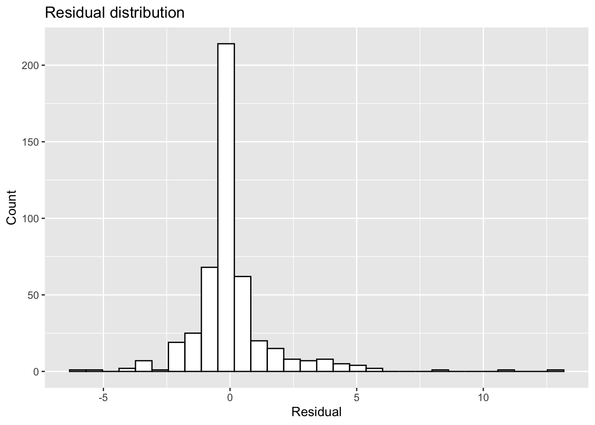
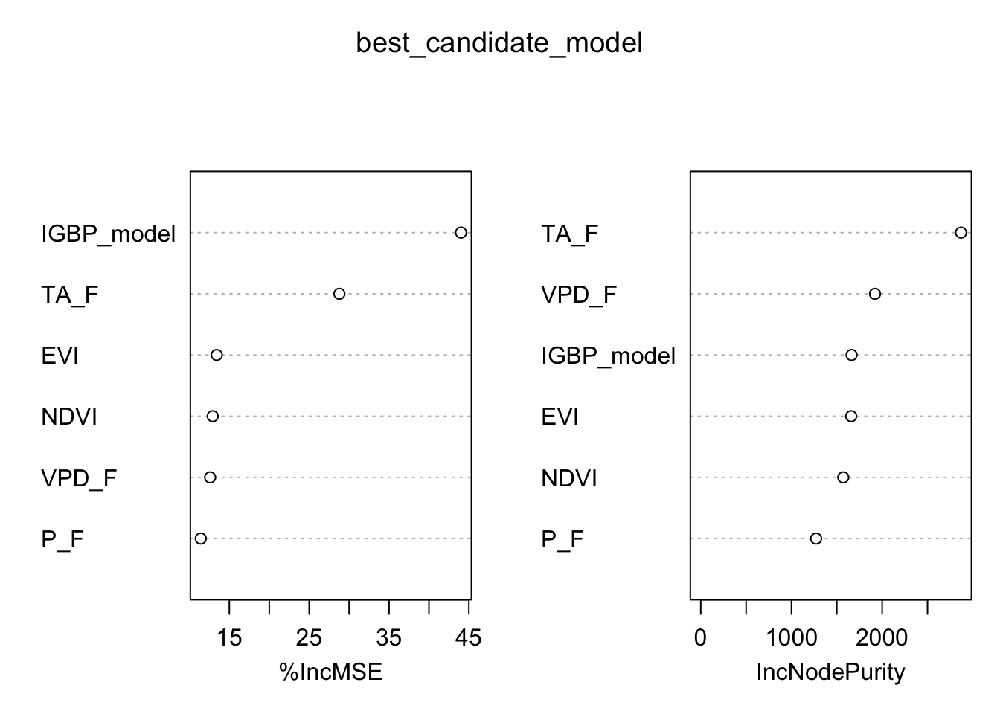
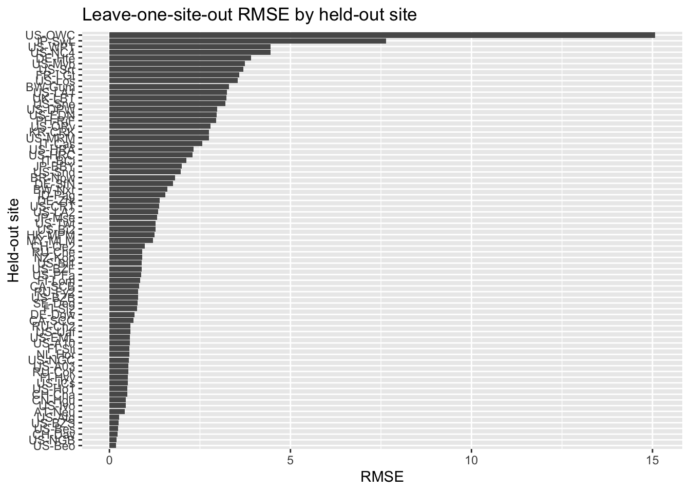
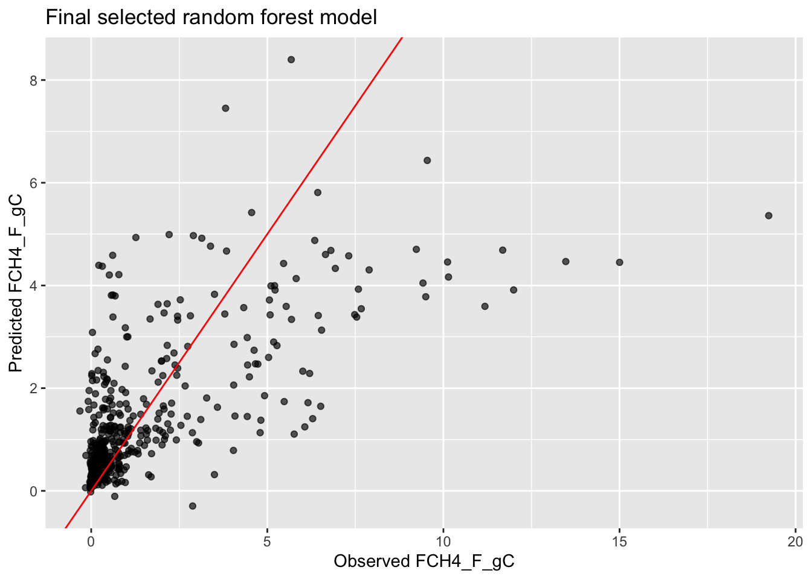
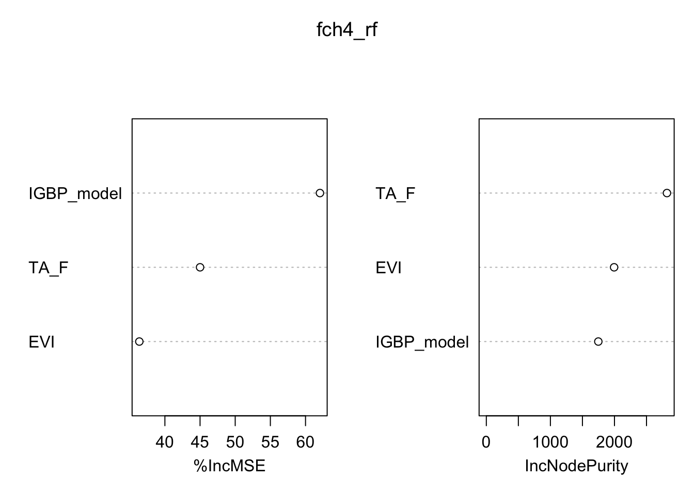

install.packages("randomForest")
install.packages("tidyverse")
install.packages("GGally")Random Forest Models: Predicting Methane Flux
From integrated data to prediction
In Data Integration, we built the kind of table needed for methane flux modeling: one row per site-month, with methane flux as the response and climate, vegetation, and ecosystem variables as candidate predictors.
In this workshop, we will ask:
Can we use climate, vegetation, and ecosystem predictors to estimate monthly methane flux, and how do we know whether the model is useful?
By the end of this workshop, you will be able to:
- Identify a response variable and candidate predictors.
- Prepare a model-ready table for random forest regression.
- Compare candidate random forest models.
- Evaluate train and test performance using RMSE, MAE, R-squared, and bias.
- Interpret variable importance without treating it as causation.
- Compare random row splits with leave-one-site-out assessment.
- Build a final model by selecting the best predictor from each category.
- Save a final model object for sensitivity analysis and spatial prediction.
Install packages
Load libraries
library(randomForest)
library(tidyverse)
library(GGally)Random forests
Random forests are ensembles of decision trees. Each tree is fit to a bootstrap sample of the data, and each split considers only a random subset of predictors. The final prediction is the average prediction across many trees.
Random forests are useful for environmental data because they can model nonlinear relationships and interactions without requiring us to specify those relationships in advance. They are still models, though. They can overfit, they can inherit bias from the training data, and they cannot reliably predict conditions not represented in the data.
Load the modeling data
This workshop uses a model-ready version of the methane flux dataset. The same structure is what you are building toward in your final project.
load("data/RANDOMFOREST_DATASET.RDATA")Inspect the data:
glimpse(fluxnet)Rows: 2,362
Columns: 13
Groups: YearMon [156]
$ YearMon <yearmon> 2006, 2007, 2008, 2009, 2010, 2010, 2010, 2010, 2011…
$ SITE <chr> "FI-Lom", "FI-Lom", "FI-Lom", "FI-Lom", "FI-Lom", "IT-Ca…
$ P_F <dbl> 282.672, 539.435, 461.321, 131.578, 334.310, 59.800, 50.…
$ TA_F <dbl> -11.6205168, -13.7393918, -8.8871801, -11.0538978, -14.2…
$ VPD_F <dbl> 0.3030585, 0.1547117, 0.2917641, 0.3035800, 0.1979704, 5…
$ NEE_F_gC <dbl> 5.181756, 4.637798, 4.413395, 4.483548, 5.866316, 12.121…
$ FCH4_F_gC <dbl> 0.295321420, 0.387999148, 0.302821587, 0.362427806, 0.45…
$ SITE_NAME <chr> "Lompolojankka", "Lompolojankka", "Lompolojankka", "Lomp…
$ LOCATION_LAT <dbl> 67.9972, 67.9972, 67.9972, 67.9972, 67.9972, 45.0700, 38…
$ LOCATION_LONG <dbl> 24.2092, 24.2092, 24.2092, 24.2092, 24.2092, 8.7175, -12…
$ IGBP <chr> "WET", "WET", "WET", "WET", "WET", "CRO", "GRA", "CRO", …
$ NDVI <dbl> 0.41164, 0.41164, 0.41164, 0.41164, 0.41164, 0.35740, 0.…
$ EVI <dbl> 0.2059062, 0.2059062, 0.2059062, 0.2059062, 0.2059062, 0…names(fluxnet) [1] "YearMon" "SITE" "P_F" "TA_F"
[5] "VPD_F" "NEE_F_gC" "FCH4_F_gC" "SITE_NAME"
[9] "LOCATION_LAT" "LOCATION_LONG" "IGBP" "NDVI"
[13] "EVI" The response variable is monthly methane flux:
summary(fluxnet$FCH4_F_gC) Min. 1st Qu. Median Mean 3rd Qu. Max.
-1.8194 0.1013 0.4050 1.3946 1.4400 28.3012 Modeling checklist
Before fitting any model, identify:
- response variable:
FCH4_F_gC; - climate predictors:
P_F,TA_F,VPD_F; - vegetation predictors:
NDVI,EVI; - ecosystem predictor:
IGBP; - grouping variable for site-level assessment:
SITE.
Prepare the modeling table:
model_data <- fluxnet %>%
ungroup() %>%
select(SITE, YearMon, FCH4_F_gC,
P_F, TA_F, VPD_F,
NDVI, EVI,
IGBP) %>%
drop_na()Check the table:
nrow(model_data)[1] 2362n_distinct(model_data$SITE)[1] 73summary(model_data) SITE YearMon FCH4_F_gC P_F
Length:2362 Min. :2006 Min. :-1.8194 Min. : 0.00
Class :character 1st Qu.:2014 1st Qu.: 0.1013 1st Qu.: 14.44
Mode :character Median :2015 Median : 0.4050 Median : 43.24
Mean :2015 Mean : 1.3946 Mean : 69.25
3rd Qu.:2017 3rd Qu.: 1.4400 3rd Qu.: 84.50
Max. :2019 Max. :28.3012 Max. :1094.02
TA_F VPD_F NDVI EVI
Min. :-37.188 Min. : 0.000 Min. :-0.1851 Min. :-0.1550
1st Qu.: 2.957 1st Qu.: 1.648 1st Qu.: 0.4454 1st Qu.: 0.1974
Median : 11.138 Median : 3.995 Median : 0.5923 Median : 0.2925
Mean : 9.648 Mean : 4.777 Mean : 0.5390 Mean : 0.2939
3rd Qu.: 17.568 3rd Qu.: 6.732 3rd Qu.: 0.6974 3rd Qu.: 0.4012
Max. : 31.280 Max. :29.075 Max. : 0.9174 Max. : 0.7209
IGBP
Length:2362
Class :character
Mode :character
Some ecosystem classes occur at only one site. That causes problems for leave-one-site-out prediction: if the held-out site is the only example of an ecosystem class, the training set has never seen that class. Collapse rare classes into Other.
common_igbp <- model_data %>%
distinct(SITE, IGBP) %>%
count(IGBP, name = "n_sites") %>%
filter(n_sites >= 3) %>%
pull(IGBP)
model_data <- model_data %>%
mutate(IGBP_model = if_else(IGBP %in% common_igbp, IGBP, "Other"),
IGBP_model = as.factor(IGBP_model))Check the collapsed ecosystem classes:
model_data %>%
distinct(SITE, IGBP_model) %>%
count(IGBP_model, name = "n_sites") %>%
arrange(desc(n_sites))# A tibble: 6 × 2
IGBP_model n_sites
<fct> <int>
1 WET 31
2 CRO 12
3 Other 10
4 GRA 9
5 ENF 7
6 EBF 4Explore the predictors
Visualize key variables before modeling:
ggpairs(model_data,
columns = c("FCH4_F_gC", "P_F", "TA_F", "VPD_F", "NDVI", "EVI"))
Look at methane flux by ecosystem type:
ggplot(model_data, aes(x = IGBP_model, y = FCH4_F_gC)) +
geom_boxplot() +
coord_flip() +
labs(title = "Monthly methane flux by ecosystem class",
x = "IGBP",
y = "FCH4_F_gC")
Evaluation metrics
We will evaluate models using four metrics:
- RMSE: root mean squared error; lower is better.
- MAE: mean absolute error; lower is better.
- R-squared: squared correlation between observed and predicted; higher is better.
- Bias: mean predicted minus observed; closer to zero is better.
model_metrics <- function(observed, predicted) {
tibble(
rmse = sqrt(mean((observed - predicted)^2, na.rm = TRUE)),
mae = mean(abs(observed - predicted), na.rm = TRUE),
r2 = cor(observed, predicted, use = "complete.obs")^2,
bias = mean(predicted - observed, na.rm = TRUE)
)
}Train/test split
A random row split asks: can the model predict new months from a network of sites that are mostly represented in the training data?
set.seed(111)
model_data <- model_data %>%
mutate(row_id = row_number())
train <- model_data %>%
sample_frac(0.80)
test <- model_data %>%
anti_join(train %>% select(row_id), by = "row_id")
nrow(train)[1] 1890nrow(test)[1] 472Candidate models
Fit three candidate models:
- Climate-only model.
- Climate + vegetation model.
- Climate + vegetation + ecosystem model.
candidate_formulas <- list(
climate = FCH4_F_gC ~ P_F + TA_F + VPD_F,
climate_vegetation = FCH4_F_gC ~ P_F + TA_F + VPD_F + NDVI + EVI,
climate_vegetation_ecosystem = FCH4_F_gC ~ P_F + TA_F + VPD_F + NDVI + EVI + IGBP_model
)Fit each model:
set.seed(111)
candidate_models <- lapply(candidate_formulas, function(formula) {
randomForest(formula,
data = train,
keep.forest = TRUE,
importance = TRUE,
mtry = 2,
ntree = 300)
})Compare train and test performance:
candidate_metrics <- imap_dfr(candidate_models, function(model, model_name) {
train_pred <- predict(model, train)
test_pred <- predict(model, test)
bind_rows(
model_metrics(train$FCH4_F_gC, train_pred) %>%
mutate(model = model_name, dataset = "train"),
model_metrics(test$FCH4_F_gC, test_pred) %>%
mutate(model = model_name, dataset = "test")
)
})
candidate_metrics# A tibble: 6 × 6
rmse mae r2 bias model dataset
<dbl> <dbl> <dbl> <dbl> <chr> <chr>
1 0.996 0.560 0.894 0.0169 climate train
2 2.13 1.28 0.256 -0.00283 climate test
3 0.971 0.529 0.912 0.0113 climate_vegetation train
4 1.99 1.18 0.341 -0.0295 climate_vegetation test
5 0.837 0.424 0.920 0.00589 climate_vegetation_ecosystem train
6 1.68 0.937 0.535 -0.0491 climate_vegetation_ecosystem test Visualize model performance:
candidate_metrics %>%
pivot_longer(cols = c(rmse, mae, r2, bias),
names_to = "metric",
values_to = "value") %>%
ggplot(aes(x = model, y = value, fill = dataset)) +
geom_col(position = "dodge") +
facet_wrap(~ metric, scales = "free_y") +
coord_flip() +
labs(title = "Train and test performance for candidate random forest models",
x = "Model",
y = "Metric value")
Select the best candidate model by test RMSE:
best_candidate_name <- candidate_metrics %>%
filter(dataset == "test") %>%
arrange(rmse) %>%
slice(1) %>%
pull(model)
best_candidate_name[1] "climate_vegetation_ecosystem"Diagnose the best candidate model
best_candidate_model <- candidate_models[[best_candidate_name]]
test$pred_fch4 <- predict(best_candidate_model, test)Observed vs. predicted:
ggplot(test, aes(x = FCH4_F_gC, y = pred_fch4)) +
geom_point(alpha = 0.65) +
geom_abline(slope = 1, intercept = 0, color = "red") +
labs(title = "Observed vs. predicted methane flux",
x = "Observed FCH4_F_gC",
y = "Predicted FCH4_F_gC")
Residuals:
test <- test %>%
mutate(residual = FCH4_F_gC - pred_fch4)
ggplot(test, aes(x = pred_fch4, y = residual)) +
geom_point(alpha = 0.65) +
geom_hline(yintercept = 0, color = "red") +
labs(title = "Residuals vs. predicted methane flux",
x = "Predicted FCH4_F_gC",
y = "Residual")
ggplot(test, aes(x = residual)) +
geom_histogram(color = "black", fill = "white") +
labs(title = "Residual distribution",
x = "Residual",
y = "Count")`stat_bin()` using `bins = 30`. Pick better value `binwidth`.
Variable importance:
importance(best_candidate_model) %IncMSE IncNodePurity
P_F 12.50056 1278.096
TA_F 27.57772 2852.692
VPD_F 14.13812 1834.517
NDVI 13.56130 1605.910
EVI 16.33527 1724.019
IGBP_model 44.58869 1775.594varImpPlot(best_candidate_model)
Importance is not causation
Variable importance tells us which predictors helped this model make predictions, given this dataset and the other predictors in the model. It does not prove that a predictor causes methane flux to change.
Leave-one-site-out assessment
A random row split is useful, but it can be optimistic because rows from the same tower may appear in both training and testing. A harder question is:
Can the model predict methane flux at a tower site it has never seen?
Leave-one-site-out assessment fits one model per site. Each time, one site is held out for testing and all other sites are used for training.
To keep the workshop renderable, we use fewer trees for this assessment.
leave_one_site_out <- function(formula, data, ntree = 150, mtry = 2) {
sites <- sort(unique(data$SITE))
map_dfr(sites, function(site_id) {
train_site <- data %>% filter(SITE != site_id)
test_site <- data %>% filter(SITE == site_id)
fit <- randomForest(formula,
data = train_site,
keep.forest = TRUE,
importance = FALSE,
mtry = mtry,
ntree = ntree)
pred <- predict(fit, test_site)
model_metrics(test_site$FCH4_F_gC, pred) %>%
mutate(SITE = site_id,
n_test = nrow(test_site))
})
}Run leave-one-site-out assessment for the best candidate model:
set.seed(111)
loso_metrics <- leave_one_site_out(candidate_formulas[[best_candidate_name]],
model_data,
ntree = 150,
mtry = 2)
loso_metrics %>%
arrange(rmse) %>%
head(10)# A tibble: 10 × 6
rmse mae r2 bias SITE n_test
<dbl> <dbl> <dbl> <dbl> <chr> <int>
1 0.209 0.156 0.622 -0.0622 US-NGB 39
2 0.226 0.180 0.0493 0.168 CH-Dav 20
3 0.240 0.172 0.584 -0.0123 US-Bes 26
4 0.252 0.195 0.0269 0.195 US-BZS 14
5 0.270 0.228 0.533 0.226 US-Atq 25
6 0.285 0.226 0.108 0.183 US-Beo 14
7 0.422 0.375 0.0144 0.375 AT-Neu 23
8 0.427 0.376 0.0228 0.376 CN-Hgu 30
9 0.437 0.315 0.160 0.00969 US-Ivo 41
10 0.444 0.367 0.131 0.207 NL-Hor 8Which sites are hardest to predict?
loso_metrics %>%
arrange(desc(rmse)) %>%
head(10)# A tibble: 10 × 6
rmse mae r2 bias SITE n_test
<dbl> <dbl> <dbl> <dbl> <chr> <int>
1 15.1 13.1 0.523 -13.1 US-OWC 11
2 7.46 6.50 0.000127 -6.50 JP-SwL 7
3 4.51 3.30 0.446 -2.71 US-WPT 34
4 4.14 2.89 0.230 1.89 US-NC4 60
5 3.95 2.91 0.480 -2.85 DE-Hte 87
6 3.86 2.68 0.0504 -2.42 US-Myb 99
7 3.60 2.20 0.790 2.20 US-Los 61
8 3.60 3.25 0.571 3.25 US-Srr 44
9 3.49 2.34 0.274 2.34 FR-LGt 22
10 3.32 2.99 0.295 -2.92 BW-Gum 10Summarize leave-one-site-out performance across sites:
loso_metrics %>%
summarize(mean_rmse = mean(rmse, na.rm = TRUE),
median_rmse = median(rmse, na.rm = TRUE),
mean_mae = mean(mae, na.rm = TRUE),
median_r2 = median(r2, na.rm = TRUE),
mean_bias = mean(bias, na.rm = TRUE))# A tibble: 1 × 5
mean_rmse median_rmse mean_mae median_r2 mean_bias
<dbl> <dbl> <dbl> <dbl> <dbl>
1 1.80 1.10 1.43 0.295 0.0612Visualize site-level RMSE:
ggplot(loso_metrics,
aes(x = reorder(SITE, rmse), y = rmse)) +
geom_col() +
coord_flip() +
labs(title = "Leave-one-site-out RMSE by held-out site",
x = "Held-out site",
y = "RMSE")
Two meanings of prediction
A random row split evaluates prediction for new observations from a familiar network of sites. Leave-one-site-out evaluates prediction for a new site. For final projects, be clear about which kind of prediction you want your model to support.
Select the best predictor from each category
For final model development, we will choose one strong predictor from each category:
- climate:
P_F,TA_F, orVPD_F; - vegetation:
NDVIorEVI; - ecosystem:
IGBP_model.
We will screen individual predictors using test RMSE. This is a simple strategy, not the only valid one.
screen_predictor <- function(predictor, category) {
formula <- reformulate(predictor, response = "FCH4_F_gC")
set.seed(111)
fit <- randomForest(formula,
data = train,
keep.forest = TRUE,
importance = TRUE,
mtry = 1,
ntree = 300)
pred <- predict(fit, test)
model_metrics(test$FCH4_F_gC, pred) %>%
mutate(category = category,
predictor = predictor)
}
predictor_screen <- bind_rows(
map_dfr(c("P_F", "TA_F", "VPD_F"), screen_predictor, category = "climate"),
map_dfr(c("NDVI", "EVI"), screen_predictor, category = "vegetation"),
screen_predictor("IGBP_model", category = "ecosystem")
)
predictor_screen# A tibble: 6 × 6
rmse mae r2 bias category predictor
<dbl> <dbl> <dbl> <dbl> <chr> <chr>
1 2.87 1.76 0.000416 -0.0796 climate P_F
2 2.37 1.43 0.157 -0.166 climate TA_F
3 2.96 1.71 0.0164 0.0997 climate VPD_F
4 2.77 1.58 0.0115 -0.177 vegetation NDVI
5 2.60 1.55 0.0466 -0.109 vegetation EVI
6 2.37 1.47 0.0634 -0.165 ecosystem IGBP_modelSelect the best predictor from each category:
best_predictors <- predictor_screen %>%
group_by(category) %>%
arrange(rmse, .by_group = TRUE) %>%
slice(1) %>%
ungroup()
best_predictors# A tibble: 3 × 6
rmse mae r2 bias category predictor
<dbl> <dbl> <dbl> <dbl> <chr> <chr>
1 2.37 1.43 0.157 -0.166 climate TA_F
2 2.37 1.47 0.0634 -0.165 ecosystem IGBP_model
3 2.60 1.55 0.0466 -0.109 vegetation EVI Build the final formula:
final_predictors <- best_predictors$predictor
final_formula <- reformulate(final_predictors, response = "FCH4_F_gC")
final_formulaFCH4_F_gC ~ TA_F + IGBP_model + EVIFit the final model:
set.seed(111)
fch4_rf <- randomForest(final_formula,
data = train,
keep.forest = TRUE,
importance = TRUE,
mtry = max(1, floor(length(final_predictors) / 3)),
ntree = 500,
keep.inbag = TRUE)
fch4_rf
Call:
randomForest(formula = final_formula, data = train, keep.forest = TRUE, importance = TRUE, mtry = max(1, floor(length(final_predictors)/3)), ntree = 500, keep.inbag = TRUE)
Type of random forest: regression
Number of trees: 500
No. of variables tried at each split: 1
Mean of squared residuals: 3.787865
% Var explained: 39.37Evaluate the final model on train and test data:
train$pred_final <- predict(fch4_rf, train)
test$pred_final <- predict(fch4_rf, test)
final_metrics <- bind_rows(
model_metrics(train$FCH4_F_gC, train$pred_final) %>%
mutate(dataset = "train"),
model_metrics(test$FCH4_F_gC, test$pred_final) %>%
mutate(dataset = "test")
)
final_metrics# A tibble: 2 × 5
rmse mae r2 bias dataset
<dbl> <dbl> <dbl> <dbl> <chr>
1 1.58 0.846 0.658 -0.00641 train
2 1.81 1.04 0.469 -0.102 test Plot final model predictions:
ggplot(test, aes(x = FCH4_F_gC, y = pred_final)) +
geom_point(alpha = 0.65) +
geom_abline(slope = 1, intercept = 0, color = "red") +
labs(title = "Final selected random forest model",
x = "Observed FCH4_F_gC",
y = "Predicted FCH4_F_gC")
Inspect final model importance:
importance(fch4_rf) %IncMSE IncNodePurity
TA_F 45.00074 2819.060
IGBP_model 62.05220 1747.922
EVI 36.36293 1994.371varImpPlot(fch4_rf)
Save your final model
Save the final model and associated objects for sensitivity analysis and spatial projection. The object is named fch4_rf so later workshops can use it.
save(fch4_rf, train, test, final_formula, final_predictors,
final_metrics, predictor_screen, loso_metrics,
file = "data/products/random_forest_model.RDATA")
Course product
This workshop produces a model comparison and final random forest model. Use the standard deliverable shape from the Final Project Roadmap, with extra emphasis on validation metrics, leave-one-site-out performance, and model limitations.
Assignment
Build and compare at least three random forest models for methane flux:
- A climate-only model.
- A climate + vegetation model.
- A final model that selects the best predictor from each category.
Include:
- The model formulas.
- Train/test performance metrics.
- Leave-one-site-out performance for your preferred model.
- Observed vs. predicted plots.
- Variable importance for your final model.
- One paragraph explaining which model you would use and why.
- One paragraph explaining whether the model should be trusted for new tower sites.